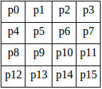
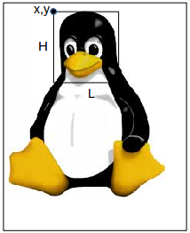

Avec p5js, il est aussi possible de travailler directement sur les pixels.
La méthode color permet de définir une couleur. Cette méthode prend 3 paramètres : la valeur du canal rouge, la valeur du canal vert et la valeur du canal bleu.
À chaque canal correspond une valeur comprise entre 0 et 255. Chaque canal est codé sur 8 bits, ce qui nous donne donc 256 valeurs (28). On parle donc d'images codées sur 24 bits (3x8). Certains formats gèrent la transparence des pixels (canal alpha), nous avons alors 4 canaux (r,v,b et alpha) et donc des images codées sur 32 bits (4x8).
Saisissez et testez ce programme :
var maCouleur;
function setup() {
createCanvas(300,300);
maCouleur=color(242,126,98);
fill(maCouleur);
ellipse(150,150,100,200);
fill("black");
console.log(red(maCouleur))
text("Rouge : "+red(maCouleur),10,30);
text("Vert : "+green(maCouleur),10,60);
text("Bleu : "+blue(maCouleur),10,90);
}
function draw(){
}
Rien de très complexe dans le programme ci-dessus : la variable maCouleur contient un objet de type "color". La méthode red renvoie la valeur du canal rouge, elle prend en paramètre un objet de type "color".
Revenons maintenant à nos pixels.
P5js rend accessible un tableau qui contient, pour chaque pixel, les informations pour le canal rouge, pour le canal vert, pour le canal bleu et pour le canal alpha (même si l'image ne gère pas le canal alpha).
Si vous avez une image de 100 par 100, vous obtiendrez un tableau qui comportera 100*100*4=40000 éléments.
Raisonnons sur une image de 4 par 4 :
Chaque carré représente 1 pixel.
P5js nous fournira le tableau suivant : {p0_r, p0_v, p0_b, p0_alpha, p1_r, p1_v, p1_b, p1_alpha, p2_r, p2_v, p2_b, p2_alpha, p3_r, p3_v, p3_b, p3_alpha,......, p15_r, p15_v, p15_b, p15_alpha} (avec p0_r le canal rouge du pixel 0, p0_v le canal vert du pixel 0, p0_b le canal bleu du pixel 0, p0_alpha le canal alpha du pixel 0, p1_r le canal rouge du pixel 1....)
La fonction loadPixels permet de créer ce genre de tableau.
Une fois créé, ce tableau a pour nom pixels.
Pour récupérer les informations concernant le pixel de coordonnées (2,3) (sachant que le pixel "p0" a pour coordonnées (0,0)), il faudra écrire pixels[56].
Déterminez l'indice de position i dans le tableau pixels d'un pixel ayant pour coordonnées (x,y) si l'image a pour largeur L (je rappelle que l'indice de position d'un tableau commence à 0). Attention, n'oubliez pas que pour chaque pixel il y 4 valeurs dans le tableau.
Il est possible de modifier la valeur d'un pixel à condition d'utiliser la fonction updatePixels après la modification et avant d'afficher l'image.
Saisissez et testez ce programme :
var img;
function preload() {
img=loadImage("tux.jpg");
}
function setup() {
createCanvas(208,242);
image(img, 0, 0);
loadPixels();
pixels[101088]=0;
pixels[101089]=0;
pixels[101090]=0;
updatePixels();
}
function draw(){
}
Pourquoi 101088 ? Pourquoi 101089 ? Pourquoi 101090 ?
Créez un programme qui remplacera tous les pixels noirs de l'image "tux.jpg" par des pixels rouges.
Faites des recherches pour trouver une méthode qui permet de transformer une image couleur en une image en niveau de gris (souvent improprement appelée "noir et blanc", car une image "noir et blanc" est uniquement composée de pixel noir et de pixel blanc)
Attention, cette recherche doit exclure toutes les méthodes s'appuyant sur des logiciels tiers types Gimp,...
À partir des recherches que vous venez de mener, écrire un programme qui permettra de transformer l'image "tux.jpg" en une image en niveau de gris. Il est évidemment interdit d'utiliser le filtre proposé par p5js.
Essayez d'écrire un programme qui permettra d'obtenir ceci :
Appuyez sur la touche F5 pour relancer l'animation
La méthode "get" de la classe Image permet de sélectionner une partie d'une image. Cette méthode prend 3 paramètres : img.get(x,y,L,H)
avec H la hauteur de la nouvelle image et L la largeur de la nouvelle image.
Saisissez et testez ce programme :
var img;
var img1;
function preload() {
img=loadImage("tux.jpg");
}
function setup() {
createCanvas(208,242);
background(0);
img1=img.get(65,3,80,90);
image(img1,70,80);
}
function draw(){
}
Créez un programme permettant d'obtenir ceci (déplacer le curseur de la souris dans la fenêtre ci-dessous) :